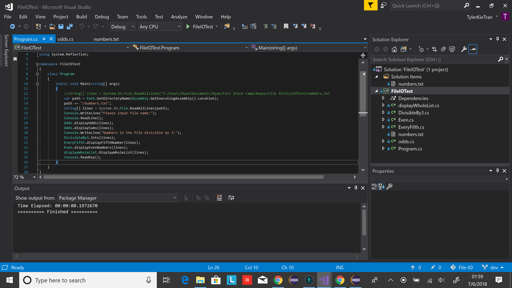
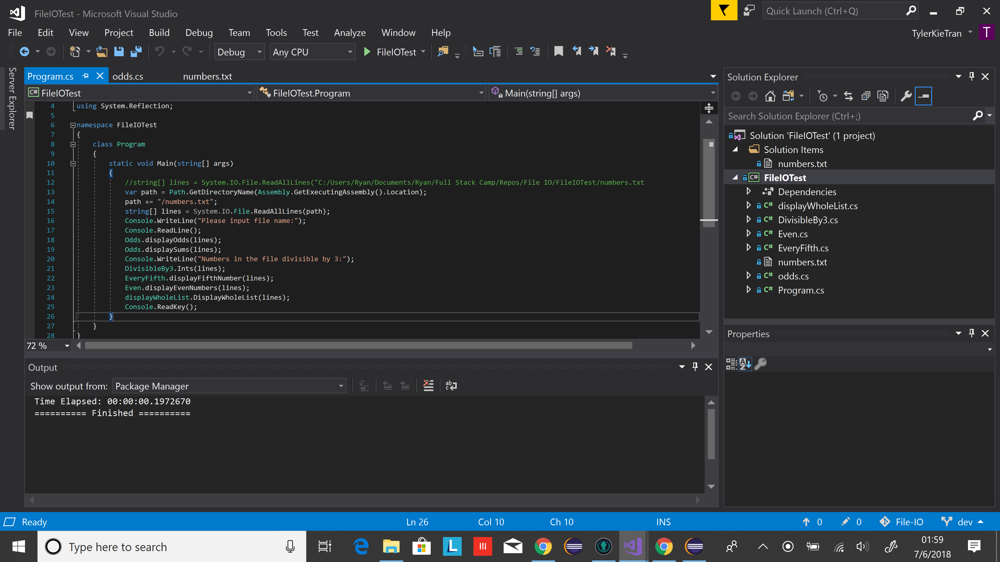

Before we could even begin to think about coding, we had to learn proper source control. Source Control is a vital component for any software management. Source control is the management of changes made to softwares, programs, websites, or other forms of information. We used GitKraken to follow correct source control procedure.
This tasks is impossible on our own, but thankfully, we were assigned into teams. Source Control was our first experience working together, and all though there were complications, I can sternly say it was a learning experience.
In regards to File IO, learning about it was more challenging than actually coding it. This is because it was one of our first times learning a new concept on our own through research and experimentation. Once we learned what we needed, the coding was rather easy.
Merging and pulling and all those other fun procedures of source control had to be followed. We managed it alright, but it required some coordination. Overall, File IO and Source Control were relatively easy concepts to learn and understand.
 
